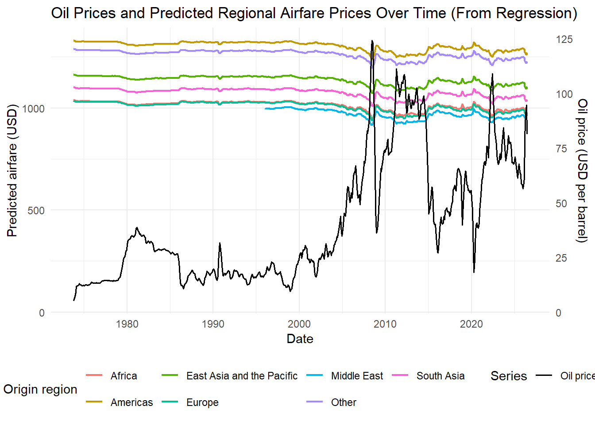
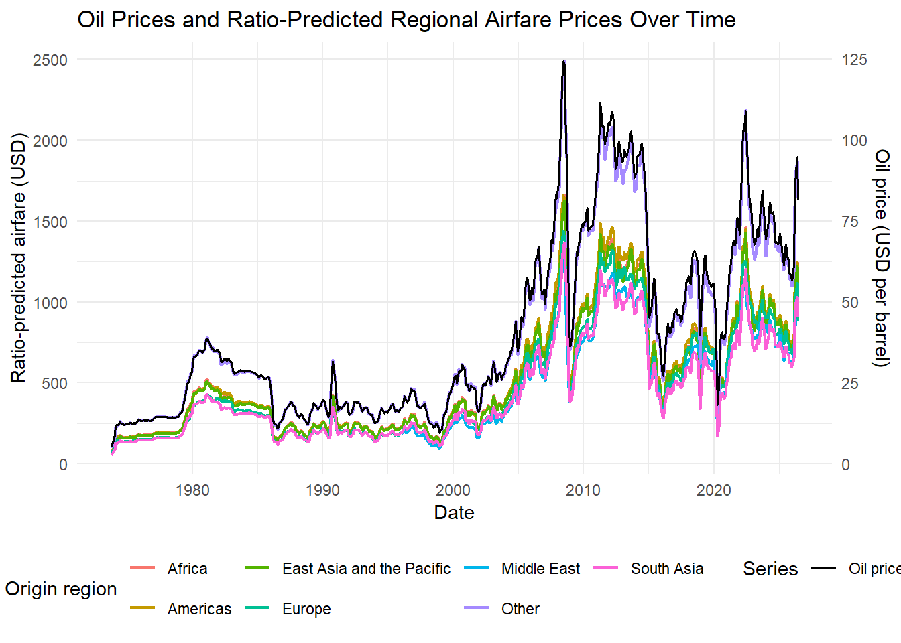

# Clear environment to restart
rm(list = ls())
# List the regional hubs for each continent
# Updated regions to match the UNWTO regional classifications
# (Africa, Americas, East Asia and the Pacific, Europe, Middle East, South Asia, Other)
# Africa
hubs_AF <- c("Cairo International Airport",
"OR Tambo International Airport",
"Bole International Airport",
"Mohammed V International Airport",
"Hurghada International Airport")
# Americas
hubs_NA <- c("Hartsfield–Jackson Atlanta International Airport",
"Dallas Fort Worth International Airport",
"O'Hare International Airport",
"Denver International Airport",
"Los Angeles International Airport")
# East Asia and Pacific
hubs_AS <- c("Beijing Capital International Airport",
"Tokyo Haneda Airport",
"Shanghai Pudong International Airport",
"Guangzhou Baiyun International Airport",
"Sydney Airport")
# Europe
hubs_EU <- c("Heathrow Airport",
"Istanbul Airport",
"Charles de Gaulle Airport",
"Amsterdam Airport Schiphol",
"Adolfo Suárez Madrid–Barajas Airport")
# Middle East
hubs_ME <- c("Dubai International Airport",
"Hamad International Airport",
"King Abdulaziz International Airport",
"Istanbul Sabiha Gökçen International Airport",
"King Khalid International Airport")
# South Asia
hubs_SA <- c("Indira Gandhi International Airport",
"Singapore Changi Airport",
"Suvarnabhumi Airport",
"Soekarno–Hatta International Airport",
"Kuala Lumpur International Airport")
# Other
hubs_OT <- c("El Dorado International Airport",
"São Paulo–Guarulhos International Airport",
"Jorge Chávez International Airport",
"Auckland Airport",
"Daniel K. Inouye International Airport")
## South America hubs are currently commented out
# hubs_SA <- c("El Dorado International Airport",
# "São Paulo–Guarulhos International Airport",
# "Jorge Chávez International Airport",
# "Arturo Merino Benítez International Airport",
# "São Paulo–Congonhas Airport")
## Oceania hubs are currently commented out
# hubs_OC <- c("Sydney Airport",
# "Melbourne Airport",
# "Brisbane Airport",
# "Auckland Airport",
# "Daniel K. Inouye International Airport")Predicting Backward Panel of Air Travel Regional Prices
Method
This attempts to predict the backward panel of air travel regional prices by collecting and analyzing airfare data from major transit hubs across different continents. Using a cross-section of major transit hubs, I aim to capture airfare prices for five major transit hubs in each continent. I then correlate these prices to the geographic distance and oil prices. For here, I can produce a cross-sectional mapping of airfare prices across different regions in 2019 which can be used in the nature tourism GEP estimates.
Collecting Air Travel Prices
In this section, I generate a matrix of orgin-destination prices for various air travel routes. This was collected on Sept. 8th, 2026. The search assumptions is for a round trip journey for 1 person without any checked luggage. The round trip is assumed to be 1 week flying from Friday to Friday (e.g., Sept. 11th - Sept. 18th). The prices are presented in USD. Flights are filtered by “Best” and sorted by “Price”. I record and average the first five flights that are presented. I use flightlist instead of Google Flights for data collection: https://www.flightlist.io/ This is because it requires no API to query, is free, and the platform is simple.
Travel nodes are selected from the most traveled transit hubs globally, as identified by Wikipedia: https://en.wikipedia.org/wiki/List_of_busiest_airports_by_passenger_traffic Some of the regions are not limited on this list. So I supplement using: - Africa: https://en.wikipedia.org/wiki/List_of_the_busiest_airports_in_Africa - South America: https://en.wikipedia.org/wiki/List_of_the_busiest_airports_in_South_America - Oceania: https://en.wikipedia.org/wiki/List_of_the_busiest_airports_in_Oceania - Middle East: https://en.wikipedia.org/wiki/List_of_the_busiest_airports_in_the_Middle_East - Southeast Asia: https://en.wikipedia.org/wiki/List_of_the_busiest_airports_in_Southeast_Asia The aim of the exercise is to get a range (IQR) for air travel prices by region/contient. So, I take the top five hubs for the following regions: - North America - Europe - Asia - South America - Africa - Oceania From here, I can then construct a matrix of every hub to any other hub. This provide both between and within airfare price comparisions. So this data wil be averaged across flights for O-D pairs, then aggregated by O-D pairs to the regional or continental level.
# For each hub, add rank number and region category variables.
hubs_AF <- data.frame(hub = hubs_AF, rank = 1:5, region = "Africa")
hubs_NA <- data.frame(hub = hubs_NA, rank = 1:5, region = "Americas")
hubs_AS <- data.frame(hub = hubs_AS, rank = 1:5, region = "East Asia and the Pacific")
hubs_EU <- data.frame(hub = hubs_EU, rank = 1:5, region = "Europe")
hubs_ME <- data.frame(hub = hubs_ME, rank = 1:5, region = "Middle East")
hubs_SA <- data.frame(hub = hubs_SA, rank = 1:5, region = "South Asia")
hubs_OT <- data.frame(hub = hubs_OT, rank = 1:5, region = "Other")
## Commented out regions
# hubs_SA <- data.frame(hub = hubs_SA, rank = 1:5, region = "South America")
# hubs_OC <- data.frame(hub = hubs_OC, rank = 1:5, region = "Oceania")
# All hubs
all_hubs <- rbind(hubs_AF, hubs_NA, hubs_AS, hubs_EU, hubs_ME, hubs_SA, hubs_OT)
# Print the list:
print(all_hubs) hub rank
1 Cairo International Airport 1
2 OR Tambo International Airport 2
3 Bole International Airport 3
4 Mohammed V International Airport 4
5 Hurghada International Airport 5
6 Hartsfield–Jackson Atlanta International Airport 1
7 Dallas Fort Worth International Airport 2
8 O'Hare International Airport 3
9 Denver International Airport 4
10 Los Angeles International Airport 5
11 Beijing Capital International Airport 1
12 Tokyo Haneda Airport 2
13 Shanghai Pudong International Airport 3
14 Guangzhou Baiyun International Airport 4
15 Sydney Airport 5
16 Heathrow Airport 1
17 Istanbul Airport 2
18 Charles de Gaulle Airport 3
19 Amsterdam Airport Schiphol 4
20 Adolfo Suárez Madrid–Barajas Airport 5
21 Dubai International Airport 1
22 Hamad International Airport 2
23 King Abdulaziz International Airport 3
24 Istanbul Sabiha Gökçen International Airport 4
25 King Khalid International Airport 5
26 Indira Gandhi International Airport 1
27 Singapore Changi Airport 2
28 Suvarnabhumi Airport 3
29 Soekarno–Hatta International Airport 4
30 Kuala Lumpur International Airport 5
31 El Dorado International Airport 1
32 São Paulo–Guarulhos International Airport 2
33 Jorge Chávez International Airport 3
34 Auckland Airport 4
35 Daniel K. Inouye International Airport 5
region
1 Africa
2 Africa
3 Africa
4 Africa
5 Africa
6 Americas
7 Americas
8 Americas
9 Americas
10 Americas
11 East Asia and the Pacific
12 East Asia and the Pacific
13 East Asia and the Pacific
14 East Asia and the Pacific
15 East Asia and the Pacific
16 Europe
17 Europe
18 Europe
19 Europe
20 Europe
21 Middle East
22 Middle East
23 Middle East
24 Middle East
25 Middle East
26 South Asia
27 South Asia
28 South Asia
29 South Asia
30 South Asia
31 Other
32 Other
33 Other
34 Other
35 Other# Construct the matrix of regional hubs to generate all possible O-D pairings
od_pairs <- expand.grid(origin = all_hubs$hub, destination = all_hubs$hub)
od_pairs <- merge(od_pairs, all_hubs[, c("hub", "region")], by.x = "origin", by.y = "hub")
od_pairs <- merge(od_pairs, all_hubs[, c("hub", "region")], by.x = "destination", by.y = "hub")
colnames(od_pairs)[3:4] <- c("origin_region", "destination_region")
od_pairs$pair_id <- 1:nrow(od_pairs)
# Remove all self-referencing pairs (origin & destination are same)
# These are meaningless pairings (do not fly to your own hub)
od_pairs <- od_pairs[od_pairs$origin != od_pairs$destination, ]# Determine distance between airports
# Match the hub names above to stable IATA airport codes.
hub_iata <- c(
"Cairo International Airport" = "CAI",
"OR Tambo International Airport" = "JNB",
"Bole International Airport" = "ADD",
"Mohammed V International Airport" = "CMN",
"Hurghada International Airport" = "HRG",
"Hartsfield–Jackson Atlanta International Airport" = "ATL",
"Dallas Fort Worth International Airport" = "DFW",
"O'Hare International Airport" = "ORD",
"Denver International Airport" = "DEN",
"Los Angeles International Airport" = "LAX",
"Beijing Capital International Airport" = "PEK",
"Tokyo Haneda Airport" = "HND",
"Shanghai Pudong International Airport" = "PVG",
"Guangzhou Baiyun International Airport" = "CAN",
"Sydney Airport" = "SYD",
"Heathrow Airport" = "LHR",
"Istanbul Airport" = "IST",
"Charles de Gaulle Airport" = "CDG",
"Amsterdam Airport Schiphol" = "AMS",
"Adolfo Suárez Madrid–Barajas Airport" = "MAD",
"Dubai International Airport" = "DXB",
"Hamad International Airport" = "DOH",
"King Abdulaziz International Airport" = "JED",
"Istanbul Sabiha Gökçen International Airport" = "SAW",
"King Khalid International Airport" = "RUH",
"Indira Gandhi International Airport" = "DEL",
"Singapore Changi Airport" = "SIN",
"Suvarnabhumi Airport" = "BKK",
"Soekarno–Hatta International Airport" = "CGK",
"Kuala Lumpur International Airport" = "KUL",
"El Dorado International Airport" = "BOG",
"São Paulo–Guarulhos International Airport" = "GRU",
"Jorge Chávez International Airport" = "LIM",
"Auckland Airport" = "AKL",
"Daniel K. Inouye International Airport" = "HNL"
)
# Download airport coordinates. The source stores coordinates as longitude, latitude.
airport_data <- read.csv(
"https://raw.githubusercontent.com/datasets/airport-codes/master/data/airport-codes.csv",
stringsAsFactors = FALSE
)
airport_locations <- airport_data[match(unname(hub_iata), airport_data$iata_code), ]
airport_locations$hub <- names(hub_iata)
# Match airport coordinates to O-D pairs
coordinates <- do.call(
rbind,
strsplit(airport_locations$coordinates, ", ", fixed = TRUE)
)
airport_locations$longitude <- as.numeric(coordinates[, 1])
airport_locations$latitude <- as.numeric(coordinates[, 2])
# Calculate great-circle distance in kilometers using the Haversine formula.
haversine_km <- function(lon1, lat1, lon2, lat2) {
radians <- pi / 180
delta_lon <- (lon2 - lon1) * radians
delta_lat <- (lat2 - lat1) * radians
a <- sin(delta_lat / 2)^2 +
cos(lat1 * radians) * cos(lat2 * radians) * sin(delta_lon / 2)^2
6371 * 2 * asin(sqrt(a))
}
origin_locations <- airport_locations[match(od_pairs$origin, airport_locations$hub), ]
destination_locations <- airport_locations[match(od_pairs$destination, airport_locations$hub), ]
# Calculate distance
od_pairs$distance_km <- haversine_km(
origin_locations$longitude,
origin_locations$latitude,
destination_locations$longitude,
destination_locations$latitude
)# Confirm the O-D pairings
print(paste("Number of O-D pairs:", nrow(od_pairs)))[1] "Number of O-D pairs: 1190"print(head(od_pairs)) destination origin
1 Adolfo Suárez Madrid–Barajas Airport Indira Gandhi International Airport
2 Adolfo Suárez Madrid–Barajas Airport Shanghai Pudong International Airport
3 Adolfo Suárez Madrid–Barajas Airport O'Hare International Airport
4 Adolfo Suárez Madrid–Barajas Airport Bole International Airport
5 Adolfo Suárez Madrid–Barajas Airport King Abdulaziz International Airport
6 Adolfo Suárez Madrid–Barajas Airport Daniel K. Inouye International Airport
origin_region destination_region pair_id distance_km
1 South Asia Europe 1 9000.922
2 East Asia and the Pacific Europe 2 13886.873
3 Americas Europe 3 9377.430
4 Africa Europe 4 5713.958
5 Middle East Europe 5 5127.718
6 Other Europe 6 16482.411For each O-D pairing, region, what is distance, first five flights, and the average airfare cost. NOTE BEFORE YOU RUN THIS: This has a long run time!
# Flightlist's browser uses this public JSON endpoint; no API key is required.
# Scrape incomplete routes by default; set this to FALSE for an offline render.
scrape_flightlist <- TRUE
scrape_delay_seconds <- 0.25
outbound_date <- "2026-09-11"
return_date <- "2026-09-18"
od_pairs$origin_iata <- unname(hub_iata[od_pairs$origin])
od_pairs$destination_iata <- unname(hub_iata[od_pairs$destination])
flight_searches <- od_pairs[, c(
"pair_id", "origin", "destination", "origin_region",
"destination_region", "distance_km", "origin_iata", "destination_iata"
)]
flight_searches$outbound_date <- outbound_date
flight_searches$return_date <- return_date
flight_searches$search_url <- "https://www.flightlist.io/"
flight_searches$search_instructions <- paste(
"Search", flight_searches$origin_iata, "to",
flight_searches$destination_iata, "for", outbound_date,
"through", return_date
)
# These columns are populated by the scraper or manual fallback.
for (column in paste0("flight_", 1:5, "_usd")) {
flight_searches[[column]] <- NA_real_
}
flight_searches$average_fare_usd <- NA_real_
flight_searches$checked <- FALSE
flight_searches$status <- "manual_required"
# Preserve fares already entered in a previous version of the queue.
queue_path <- "flightlist_search_queue.csv"
if (file.exists(queue_path)) {
previous_searches <- read.csv(queue_path, stringsAsFactors = FALSE)
previous_rows <- match(flight_searches$pair_id, previous_searches$pair_id)
saved_columns <- c(paste0("flight_", 1:5, "_usd"), "checked", "status")
for (column in saved_columns) {
if (column %in% names(previous_searches)) {
flight_searches[[column]] <- previous_searches[[column]][previous_rows]
}
}
}
# Normalize cached or manually entered fares before calculating averages.
fare_columns <- paste0("flight_", 1:5, "_usd")
for (column in fare_columns) {
fare_values <- suppressWarnings(as.numeric(as.character(flight_searches[[column]])))
fare_values[!is.finite(fare_values)] <- NA_real_
flight_searches[[column]] <- fare_values
}
flightlist_query <- function(origin_iata, destination_iata,
outbound_date, return_date) {
query <- c(
fly_from = paste0("airport:", origin_iata),
fly_to = paste0("airport:", destination_iata),
date_from = format(as.Date(outbound_date), "%d/%m/%Y"),
date_to = format(as.Date(outbound_date), "%d/%m/%Y"),
return_from = format(as.Date(return_date), "%d/%m/%Y"),
return_to = format(as.Date(return_date), "%d/%m/%Y"),
adults = "1", children = "0", infants = "0",
selected_cabins = "M", curr = "USD", price_to = "",
limit = "100", sort = "price", max_stopovers = "10",
max_fly_duration = "60", stopover_from = "00:00",
stopover_to = "48:00", ret_from_diff_city = "false",
ret_to_diff_city = "false", dtime_from = "", dtime_to = "",
enable_vi = "true", flight_type = "return",
adult_hand_bag = "0", adult_hold_bag = "0"
)
encoded_query <- paste(
paste0(utils::URLencode(names(query), reserved = TRUE), "=",
utils::URLencode(unname(query), reserved = TRUE)),
collapse = "&"
)
paste0("https://www.flightlist.io/api/search.php?", encoded_query)
}
scrape_flightlist_prices <- function(search, delay_seconds = 1) {
if (!requireNamespace("jsonlite", quietly = TRUE)) {
stop("Install the jsonlite package before scraping Flightlist.")
}
url <- flightlist_query(
search$origin_iata, search$destination_iata,
search$outbound_date, search$return_date
)
result <- tryCatch({
response_text <- paste(readLines(url, warn = FALSE), collapse = "")
jsonlite::fromJSON(response_text, simplifyVector = FALSE)
}, error = function(error) {
list(error = conditionMessage(error))
})
Sys.sleep(delay_seconds)
if (!is.null(result$error)) {
return(list(prices = rep(NA_real_, 5), status = result$error))
}
if (length(result$data) == 0) {
return(list(prices = rep(NA_real_, 5), status = "no_results_manual_required"))
}
prices <- sort(as.numeric(vapply(result$data, function(flight) {
if (is.null(flight$price)) NA_real_ else flight$price
}, numeric(1))))
prices <- prices[is.finite(prices)]
prices <- c(prices, rep(NA_real_, 5))[1:5]
list(
prices = prices,
status = if (sum(!is.na(prices)) == 5) "scraped" else "fewer_than_five_manual_required"
)
}
if (scrape_flightlist) {
progress_bar <- utils::txtProgressBar(
min = 0,
max = nrow(flight_searches),
style = 3
)
for (row_number in seq_len(nrow(flight_searches))) {
if (!flight_searches$checked[row_number]) {
result <- scrape_flightlist_prices(
flight_searches[row_number, ],
delay_seconds = scrape_delay_seconds
)
if (result$status == "scraped") {
flight_searches[row_number, paste0("flight_", 1:5, "_usd")] <- result$prices
}
flight_searches$status[row_number] <- result$status
# Checkpoint after every request so an interrupted render keeps progress.
current_values <- flight_searches[, fare_columns, drop = FALSE]
flight_searches$average_fare_usd <- rowMeans(current_values, na.rm = TRUE)
flight_searches$average_fare_usd[
is.nan(flight_searches$average_fare_usd)
] <- NA_real_
flight_searches$checked <- rowSums(!is.na(current_values)) == 5
write.csv(flight_searches, queue_path, row.names = FALSE)
}
utils::setTxtProgressBar(progress_bar, row_number)
}
close(progress_bar)
}
|
| | 0%
|
| | 1%
|
|= | 1%
|
|= | 2%
|
|== | 2%
|
|== | 3%
|
|== | 4%
|
|=== | 4%
|
|=== | 5%
|
|==== | 5%
|
|==== | 6%
|
|===== | 6%
|
|===== | 7%
|
|===== | 8%
|
|====== | 8%
|
|====== | 9%
|
|======= | 9%
|
|======= | 10%
|
|======= | 11%
|
|======== | 11%
|
|======== | 12%
|
|========= | 12%
|
|========= | 13%
|
|========= | 14%
|
|========== | 14%
|
|========== | 15%
|
|=========== | 15%
|
|=========== | 16%
|
|============ | 16%
|
|============ | 17%
|
|============ | 18%
|
|============= | 18%
|
|============= | 19%
|
|============== | 19%
|
|============== | 20%
|
|============== | 21%
|
|=============== | 21%
|
|=============== | 22%
|
|================ | 22%
|
|================ | 23%
|
|================ | 24%
|
|================= | 24%
|
|================= | 25%
|
|================== | 25%
|
|================== | 26%
|
|=================== | 26%
|
|=================== | 27%
|
|=================== | 28%
|
|==================== | 28%
|
|==================== | 29%
|
|===================== | 29%
|
|===================== | 30%
|
|===================== | 31%
|
|====================== | 31%
|
|====================== | 32%
|
|======================= | 32%
|
|======================= | 33%
|
|======================= | 34%
|
|======================== | 34%
|
|======================== | 35%
|
|========================= | 35%
|
|========================= | 36%
|
|========================== | 36%
|
|========================== | 37%
|
|========================== | 38%
|
|=========================== | 38%
|
|=========================== | 39%
|
|============================ | 39%
|
|============================ | 40%
|
|============================ | 41%
|
|============================= | 41%
|
|============================= | 42%
|
|============================== | 42%
|
|============================== | 43%
|
|============================== | 44%
|
|=============================== | 44%
|
|=============================== | 45%
|
|================================ | 45%
|
|================================ | 46%
|
|================================= | 46%
|
|================================= | 47%
|
|================================= | 48%
|
|================================== | 48%
|
|================================== | 49%
|
|=================================== | 49%
|
|=================================== | 50%
|
|=================================== | 51%
|
|==================================== | 51%
|
|==================================== | 52%
|
|===================================== | 52%
|
|===================================== | 53%
|
|===================================== | 54%
|
|====================================== | 54%
|
|====================================== | 55%
|
|======================================= | 55%
|
|======================================= | 56%
|
|======================================== | 56%
|
|======================================== | 57%
|
|======================================== | 58%
|
|========================================= | 58%
|
|========================================= | 59%
|
|========================================== | 59%
|
|========================================== | 60%
|
|========================================== | 61%
|
|=========================================== | 61%
|
|=========================================== | 62%
|
|============================================ | 62%
|
|============================================ | 63%
|
|============================================ | 64%
|
|============================================= | 64%
|
|============================================= | 65%
|
|============================================== | 65%
|
|============================================== | 66%
|
|=============================================== | 66%
|
|=============================================== | 67%
|
|=============================================== | 68%
|
|================================================ | 68%
|
|================================================ | 69%
|
|================================================= | 69%
|
|================================================= | 70%
|
|================================================= | 71%
|
|================================================== | 71%
|
|================================================== | 72%
|
|=================================================== | 72%
|
|=================================================== | 73%
|
|=================================================== | 74%
|
|==================================================== | 74%
|
|==================================================== | 75%
|
|===================================================== | 75%
|
|===================================================== | 76%
|
|====================================================== | 76%
|
|====================================================== | 77%
|
|====================================================== | 78%
|
|======================================================= | 78%
|
|======================================================= | 79%
|
|======================================================== | 79%
|
|======================================================== | 80%
|
|======================================================== | 81%
|
|========================================================= | 81%
|
|========================================================= | 82%
|
|========================================================== | 82%
|
|========================================================== | 83%
|
|========================================================== | 84%
|
|=========================================================== | 84%
|
|=========================================================== | 85%
|
|============================================================ | 85%
|
|============================================================ | 86%
|
|============================================================= | 86%
|
|============================================================= | 87%
|
|============================================================= | 88%
|
|============================================================== | 88%
|
|============================================================== | 89%
|
|=============================================================== | 89%
|
|=============================================================== | 90%
|
|=============================================================== | 91%
|
|================================================================ | 91%
|
|================================================================ | 92%
|
|================================================================= | 92%
|
|================================================================= | 93%
|
|================================================================= | 94%
|
|================================================================== | 94%
|
|================================================================== | 95%
|
|=================================================================== | 95%
|
|=================================================================== | 96%
|
|==================================================================== | 96%
|
|==================================================================== | 97%
|
|==================================================================== | 98%
|
|===================================================================== | 98%
|
|===================================================================== | 99%
|
|======================================================================| 99%
|
|======================================================================| 100%# Recalculate the average from the first five fares and preserve manual entries.
flight_values <- flight_searches[, fare_columns, drop = FALSE]
flight_searches$average_fare_usd <- rowMeans(flight_values, na.rm = TRUE)
flight_searches$average_fare_usd[is.nan(flight_searches$average_fare_usd)] <- NA_real_
flight_searches$checked <- rowSums(!is.na(flight_values)) == 5
flight_searches$status[flight_searches$checked] <- "scraped"
write.csv(flight_searches, queue_path, row.names = FALSE)
# Open Flightlist while working through the queue. Use the printed
# search_instructions to enter the route and dates in the browser form.
open_flightlist_search <- function(pair_id) {
search <- flight_searches[flight_searches$pair_id == pair_id, ]
if (nrow(search) != 1) {
stop("pair_id must identify exactly one O-D pairing.")
}
utils::browseURL(search$search_url)
invisible(search)
}
print(flight_searches[1:3, c(
"pair_id", "origin_iata", "destination_iata", "search_instructions"
)]) pair_id origin_iata destination_iata
1 1 DEL MAD
2 2 PVG MAD
3 3 ORD MAD
search_instructions
1 Search DEL to MAD for 2026-09-11 through 2026-09-18
2 Search PVG to MAD for 2026-09-11 through 2026-09-18
3 Search ORD to MAD for 2026-09-11 through 2026-09-18Determinants of Air Travel
We have a cross-section of O-D prices globally. What we need is to construct a backward panel dataset that captures historical air travel prices for these O-D pairs over time. To achieve this, we can correlate (via regression) the relationship of determinants of air travel to the price of airfare. In prinicpal, match the prices to what is driving the price over time. We assume that the two major things that drive the price are distance and the transportation cost. Distance is assumed constant over time (e.g., new major transit hubs are not introduced/created over time reducing distance). For transportation cost, we assume that oil prices are a key driver and fluctuate over time, impacting airfare accordingly.
We use the US EIA (Energy Information Administration) data on historical oil prices as a proxy for transportation costs. This allows us to model how fluctuations in oil prices impact air travel prices over time. https://www.eia.gov/dnav/pet/hist/LeafHandler.ashx?n=pet&s=f000000__3&f=m
# Load oil data
# oil_data_path <- "F:\\GEP\\GEP_recreation\\data\\us_crude_oil_price_historic_quarters.xls"
# oil_data <- rio::import(oil_data_path, sheet = 2)
oil_regional_path <- "F:\\GEP\\GEP_recreation\\data\\crude_oil_historic_monthly_regional.xls"
oil_regional_data <- rio::import(oil_regional_path, sheet = 2)
# Use the latest valid observation for each oil series so every airfare region
# receives a numeric oil price rather than a missing value from a single row.
latest_oil_value <- function(variable, data) {
values <- suppressWarnings(as.numeric(data[[variable]]))
values <- values[is.finite(values)]
if (length(values) == 0) return(NA_real_)
values[length(values)]
}
# Assign each origin region to the oil-price benchmark it should use.
region_oil_map <- data.frame(
origin_region = c(
"Africa",
"Americas",
"East Asia and the Pacific",
"Europe",
"Middle East",
"South Asia",
"Other"
),
oil_variable = c(
"price_barrel_non_opec", # Africa: non-OPEC benchmark
"price_barrel_gen", # Americas: general crude benchmark
"price_barrel_non_opec", # East Asia and the Pacific: non-OPEC benchmark
"price_barrel_opec", # Europe: OPEC benchmark
"price_barrel_persian_gulf", # Middle East: Persian Gulf benchmark
"price_barrel_non_opec", # South Asia: non-OPEC benchmark
"price_barrel_non_opec" # Other: non-OPEC benchmark
),
stringsAsFactors = FALSE
)
airfare_data <- merge(
od_pairs,
region_oil_map,
by = "origin_region",
all.x = TRUE,
sort = FALSE
)
airfare_data$oil_price <- vapply(
airfare_data$oil_variable,
function(variable) {
latest_oil_value(variable, oil_regional_data)
},
numeric(1)
)
airfare_data$oil_price <- as.numeric(airfare_data$oil_price)
airfare_data$oil_date <- as.Date(max(oil_regional_data$Date, na.rm = TRUE))
if (any(is.na(airfare_data$oil_price))) {
missing_regions <- unique(airfare_data$origin_region[is.na(airfare_data$oil_price)])
stop("Missing oil price for regions: ", paste(missing_regions, collapse = ", "))
}
# Merge the first-five-flight average into the O-D data by pair ID.
airfare_data <- merge(
airfare_data,
flight_searches[, c("pair_id", "average_fare_usd")],
by = "pair_id",
all.x = TRUE,
sort = FALSE
)library(tidyverse)── Attaching core tidyverse packages ──────────────────────── tidyverse 2.0.0 ──
✔ dplyr 1.1.4 ✔ readr 2.1.5
✔ forcats 1.0.0 ✔ stringr 1.5.1
✔ ggplot2 3.5.2 ✔ tibble 3.2.1
✔ lubridate 1.9.4 ✔ tidyr 1.3.1
✔ purrr 1.0.4
── Conflicts ────────────────────────────────────────── tidyverse_conflicts() ──
✖ dplyr::filter() masks stats::filter()
✖ dplyr::lag() masks stats::lag()
ℹ Use the conflicted package (<http://conflicted.r-lib.org/>) to force all conflicts to become errors# Simple Summary statistics by region
# Average flight price
# Average distance
# Overall (not by region) average oil price
airfare_data |>
group_by(origin_region) |>
summarise(
average_fare_usd = mean(average_fare_usd, na.rm = TRUE),
average_distance_km = mean(distance_km, na.rm = TRUE),
average_oil_price_usd = mean(oil_price, na.rm = TRUE)
)# A tibble: 7 × 4
origin_region average_fare_usd average_distance_km average_oil_price_usd
<chr> <dbl> <dbl> <dbl>
1 Africa 1094. 8222. 81.8
2 Americas 1078. 11881. 81.5
3 East Asia and the … 1069. 9782. 81.8
4 Europe 884. 8187. 78.9
5 Middle East 893. 7837. 88.2
6 Other 1640. 11352. 81.8
7 South Asia 902. 9010. 81.8# Dependencies
library(fixest)
# Correlation of oil and distance to air travel prices
reg <- lm(average_fare_usd ~ oil_price + distance_km, data = airfare_data)
summary(reg)
Call:
lm(formula = average_fare_usd ~ oil_price + distance_km, data = airfare_data)
Residuals:
Min 1Q Median 3Q Max
-972.63 -211.90 -67.19 200.28 1188.87
Coefficients:
Estimate Std. Error t value Pr(>|t|)
(Intercept) 386.522157 320.479007 1.206 0.228
oil_price -0.768905 3.870048 -0.199 0.843
distance_km 0.079854 0.001932 41.323 <2e-16 ***
---
Signif. codes: 0 '***' 0.001 '**' 0.01 '*' 0.05 '.' 0.1 ' ' 1
Residual standard error: 347.3 on 1185 degrees of freedom
(2 observations deleted due to missingness)
Multiple R-squared: 0.592, Adjusted R-squared: 0.5913
F-statistic: 859.6 on 2 and 1185 DF, p-value: < 2.2e-16# feols(average_fare_usd ~ oil_price + distance_km | origin_region, data = airfare_data, vcov = "hc3")# Also do a simple ratio for oil prices to airfares
airfare_data$oil_to_airfare_ratio <- airfare_data$oil_price / airfare_data$average_fare_usd
airfare_data$oil_to_airfare_ratio[
!is.finite(airfare_data$oil_to_airfare_ratio)
] <- NA_real_Results: Panel of Regional Airfare Prices
# Construct the backward monthly panel of O-D airfare prices.
# Each O-D pairing is repeated for every month in the oil-price data.
oil_panel <- oil_regional_data[, c(
"Date", "price_barrel_gen", "price_barrel_persian_gulf",
"price_barrel_opec", "price_barrel_non_opec"
)]
oil_panel$Date <- as.Date(oil_panel$Date)
od_month_panel <- merge(
od_pairs,
oil_panel,
by = NULL,
all = TRUE,
sort = FALSE
)
# Attach the oil series selected for each origin region.
od_month_panel <- merge(
od_month_panel,
region_oil_map,
by = "origin_region",
all.x = TRUE,
sort = FALSE
)
od_month_panel$oil_price <- mapply(
function(variable, row_number) {
od_month_panel[row_number, variable]
},
od_month_panel$oil_variable,
seq_len(nrow(od_month_panel))
)
# Preserve observed cross-sectional values for each O-D pair when available.
observed_fares <- airfare_data[, c(
"pair_id", "average_fare_usd", "oil_to_airfare_ratio"
)]
od_month_panel <- merge(
od_month_panel,
observed_fares,
by = "pair_id",
all.x = TRUE,
sort = FALSE
)
# Pull the regression coefficients from the previously estimated model.
reg_coefficients <- coef(reg)
beta_intercept <- reg_coefficients["(Intercept)"]
beta_oil <- reg_coefficients["oil_price"]
beta_distance <- reg_coefficients["distance_km"]
od_month_panel$predicted_fare_usd <- beta_intercept +
beta_oil * od_month_panel$oil_price +
beta_distance * od_month_panel$distance_km
# Ratio-based prediction: oil_to_airfare_ratio = oil_price / airfare.
# Therefore, implied airfare = oil_price / oil_to_airfare_ratio.
od_month_panel$predicted_fare_ratio_usd <-
od_month_panel$oil_price / od_month_panel$oil_to_airfare_ratio
od_month_panel$predicted_fare_ratio_usd[
!is.finite(od_month_panel$predicted_fare_ratio_usd)
] <- NA_real_
od_month_panel$year <- as.integer(format(od_month_panel$Date, "%Y"))
od_month_panel$month <- as.integer(format(od_month_panel$Date, "%m"))
od_month_panel$month_year <- format(od_month_panel$Date, "%Y-%m")
airfare_panel <- od_month_panel[, c(
"pair_id", "origin", "destination", "origin_region",
"destination_region", "distance_km", "Date", "year", "month",
"month_year", "oil_variable", "oil_price", "average_fare_usd",
"oil_to_airfare_ratio", "predicted_fare_usd",
"predicted_fare_ratio_usd"
)]
print(dim(airfare_panel))[1] 763980 16print(head(airfare_panel)) pair_id origin
1 1 Indira Gandhi International Airport
2 1 Indira Gandhi International Airport
3 1 Indira Gandhi International Airport
4 1 Indira Gandhi International Airport
5 1 Indira Gandhi International Airport
6 1 Indira Gandhi International Airport
destination origin_region destination_region
1 Adolfo Suárez Madrid–Barajas Airport South Asia Europe
2 Adolfo Suárez Madrid–Barajas Airport South Asia Europe
3 Adolfo Suárez Madrid–Barajas Airport South Asia Europe
4 Adolfo Suárez Madrid–Barajas Airport South Asia Europe
5 Adolfo Suárez Madrid–Barajas Airport South Asia Europe
6 Adolfo Suárez Madrid–Barajas Airport South Asia Europe
distance_km Date year month month_year oil_variable oil_price
1 9000.922 1973-01-15 1973 1 1973-01 price_barrel_non_opec NA
2 9000.922 2011-02-15 2011 2 2011-02 price_barrel_non_opec 89.00
3 9000.922 1975-11-15 1975 11 1975-11 price_barrel_non_opec 13.76
4 9000.922 1981-07-15 1981 7 1981-07 price_barrel_non_opec 35.96
5 9000.922 1978-09-15 1978 9 1978-09 price_barrel_non_opec 14.21
6 9000.922 1984-05-15 1984 5 1984-05 price_barrel_non_opec 28.59
average_fare_usd oil_to_airfare_ratio predicted_fare_usd
1 731.2 0.1118982 NA
2 731.2 0.1118982 1036.850
3 731.2 0.1118982 1094.702
4 731.2 0.1118982 1077.633
5 731.2 0.1118982 1094.356
6 731.2 0.1118982 1083.300
predicted_fare_ratio_usd
1 NA
2 795.3654
3 122.9689
4 321.3634
5 126.9904
6 255.5000Visualization of the predicted time series with the oil price data
# Dependencies
library(ggplot2)
# Average predicted airfare by origin region and month.
regional_monthly <- aggregate(
predicted_fare_usd ~ origin_region + Date,
data = airfare_panel,
FUN = mean,
na.action = na.omit
)
# Oil is shown once per month on the secondary axis.
oil_monthly <- aggregate(
oil_price ~ Date,
data = airfare_panel,
FUN = mean,
na.action = na.omit
)
regional_monthly <- regional_monthly[is.finite(regional_monthly$predicted_fare_usd), ]
oil_monthly <- oil_monthly[is.finite(oil_monthly$oil_price), ]
fare_max <- max(regional_monthly$predicted_fare_usd, na.rm = TRUE)
oil_max <- max(oil_monthly$oil_price, na.rm = TRUE)
oil_scale <- fare_max / oil_max
# Line graph with regional airfare lines and a separate oil-price axis.
ggplot(regional_monthly, aes(x = Date)) +
geom_line(
aes(y = predicted_fare_usd, color = origin_region),
linewidth = 0.8
) +
geom_line(
data = oil_monthly,
aes(y = oil_price * oil_scale, linetype = "Oil price"),
color = "black",
linewidth = 0.7
) +
scale_y_continuous(
name = "Predicted airfare (USD)",
sec.axis = sec_axis(
~ . / oil_scale,
name = "Oil price (USD per barrel)"
)
) +
labs(
title = "Oil Prices and Predicted Regional Airfare Prices Over Time (From Regression)",
x = "Date",
color = "Origin region",
linetype = "Series"
) +
theme_minimal() +
theme(legend.position = "bottom")
# Average ratio-based predicted airfare by origin region and month.
ratio_regional_monthly <- aggregate(
predicted_fare_ratio_usd ~ origin_region + Date,
data = airfare_panel,
FUN = mean,
na.action = na.omit
)
ratio_regional_monthly <- ratio_regional_monthly[
is.finite(ratio_regional_monthly$predicted_fare_ratio_usd),
]
ratio_fare_max <- max(
ratio_regional_monthly$predicted_fare_ratio_usd,
na.rm = TRUE
)
ratio_oil_scale <- ratio_fare_max / oil_max
# Line graph for the ratio-based prediction with a separate oil-price axis.
ggplot(ratio_regional_monthly, aes(x = Date)) +
geom_line(
aes(y = predicted_fare_ratio_usd, color = origin_region),
linewidth = 0.8
) +
geom_line(
data = oil_monthly,
aes(y = oil_price * ratio_oil_scale, linetype = "Oil price"),
color = "black",
linewidth = 0.7
) +
scale_y_continuous(
name = "Ratio-predicted airfare (USD)",
sec.axis = sec_axis(
~ . / ratio_oil_scale,
name = "Oil price (USD per barrel)"
)
) +
labs(
title = "Oil Prices and Ratio-Predicted Regional Airfare Prices Over Time",
x = "Date",
color = "Origin region",
linetype = "Series"
) +
theme_minimal() +
theme(legend.position = "bottom")
Final 2019 Estimates of Region to Reion Airfare prices
For proceedinng, I would suggest using the predicted_fare_ratio_usd values. The regression estimates attempting to include distance I believe has issues given the cross-sectional nature of the data (e.g., note the negative relationship of oil prices and predicted fares).
# Aggregate by origin-to-destination region pairing and year.
airfare_agg <- aggregate(
cbind(
average_fare_usd,
predicted_fare_usd,
predicted_fare_ratio_usd
) ~ origin_region + destination_region + year,
data = airfare_panel,
FUN = mean,
na.rm = TRUE
)
# Report summary table for 2019
airfare_2019 <- subset(airfare_agg, year == 2019)
print(airfare_2019) origin_region destination_region year average_fare_usd
2094 Africa Africa 2019 738.8900
2095 Americas Africa 2019 1368.8400
2096 East Asia and the Pacific Africa 2019 1268.1360
2097 Europe Africa 2019 634.8800
2098 Middle East Africa 2019 530.4320
2099 Other Africa 2019 1960.6560
2100 South Asia Africa 2019 960.4320
2101 Africa Americas 2019 1449.5200
2102 Americas Americas 2019 352.6800
2103 East Asia and the Pacific Americas 2019 1356.0560
2104 Europe Americas 2019 1176.2480
2105 Middle East Americas 2019 1299.0400
2106 Other Americas 2019 1028.8480
2107 South Asia Americas 2019 1227.7680
2108 Africa East Asia and the Pacific 2019 1384.5840
2109 Americas East Asia and the Pacific 2019 1328.0000
2110 East Asia and the Pacific East Asia and the Pacific 2019 592.4200
2111 Europe East Asia and the Pacific 2019 1104.8160
2112 Middle East East Asia and the Pacific 2019 1006.3680
2113 Other East Asia and the Pacific 2019 1828.8000
2114 South Asia East Asia and the Pacific 2019 518.5360
2115 Africa Europe 2019 635.9120
2116 Americas Europe 2019 1152.1040
2117 East Asia and the Pacific Europe 2019 1074.5920
2118 Europe Europe 2019 356.6600
2119 Middle East Europe 2019 528.2250
2120 Other Europe 2019 1561.1040
2121 South Asia Europe 2019 801.6560
2122 Africa Middle East 2019 553.8160
2123 Americas Middle East 2019 1174.0800
2124 East Asia and the Pacific Middle East 2019 979.5920
2125 Europe Middle East 2019 509.7833
2126 Middle East Middle East 2019 290.6800
2127 Other Middle East 2019 1897.4720
2128 South Asia Middle East 2019 687.0080
2129 Africa Other 2019 1873.2240
2130 Americas Other 2019 876.2880
2131 East Asia and the Pacific Other 2019 1680.8080
2132 Europe Other 2019 1515.0880
2133 Middle East Other 2019 1858.3680
2134 Other Other 2019 1441.6000
2135 South Asia Other 2019 1694.4240
2136 Africa South Asia 2019 953.1520
2137 Americas South Asia 2019 1152.2240
2138 East Asia and the Pacific South Asia 2019 439.2240
2139 Europe South Asia 2019 773.4320
2140 Middle East South Asia 2019 603.9760
2141 Other South Asia 2019 1719.5360
2142 South Asia South Asia 2019 302.7100
predicted_fare_usd predicted_fare_ratio_usd
2094 666.5946 492.2622
2095 1426.3180 950.1307
2096 1204.2120 844.8557
2097 702.1867 512.6557
2098 599.5343 380.9317
2099 1339.8109 1306.2254
2100 987.0607 639.8576
2101 1427.8968 965.6971
2102 493.6968 244.8001
2103 1534.0089 903.4296
2104 1266.8433 949.8019
2105 1604.0705 932.9103
2106 781.4689 685.4376
2107 1770.3092 817.9618
2108 1204.2120 922.4355
2109 1532.4301 921.7831
2110 620.5205 394.6812
2111 1323.7149 892.1217
2112 1047.3784 722.7269
2113 1399.6537 1218.3804
2114 635.5703 345.4583
2115 709.2734 423.6564
2116 1272.3513 799.6913
2117 1330.8016 715.9131
2118 484.8556 287.9974
2119 725.8417 379.3467
2120 1232.5071 1040.0364
2121 1131.3408 534.0781
2122 606.3301 368.9625
2123 1609.2875 814.9451
2124 1054.1742 652.6223
2125 725.5508 411.6421
2126 469.1023 208.7529
2127 1417.2186 1264.1310
2128 811.9848 457.6975
2129 1339.8109 1247.9765
2130 779.8900 608.2436
2131 1399.6537 1119.7854
2132 1225.4203 1223.4099
2133 1410.4228 1334.5938
2134 1004.2161 960.4206
2135 1533.7670 1128.8567
2136 987.0607 635.0075
2137 1768.7304 799.7746
2138 635.5703 292.6192
2139 1124.2541 624.5343
2140 805.1890 433.7476
2141 1533.7670 1145.5867
2142 457.1555 201.6710# Export the 2019 aggregated airfare data to a CSV file.
write.csv(airfare_2019, "F:\\GEP\\GEP_recreation\\data\\airfare_2019.csv", row.names = FALSE)Air Travel Data Sources
These are data sources that Spencer provided to assist in this exercise.
- https://www.kaggle.com/datasets/dilwong/flightprices
- Worth downloading and exploring.
- Potentially useful to supplement the constructed data set.
- ISSUE: This is for only domestic airports. So no better than the OD 94 data by Buerea of Transportation.
- to/from the following airports: ATL, DFW, DEN, ORD, LAX, CLT, MIA, JFK, EWR, SFO, DTW, BOS, PHL, LGA, IAD, OAK.
- https://www.reddit.com/r/datasets/comments/efnj6t/where_can_i_find_historical_flight_price_datasets/
- Some good suggestions. Did not find a smoking gun data set to use.
- https://www.oag.com/altus-data
- NOTE: Seems like we could try their free data trial.
- https://www.trade.gov/us-international-air-travel-statistics-i-92-data
- NOTE: This does not appear to have price data. Only aggregate arrivals and departures.